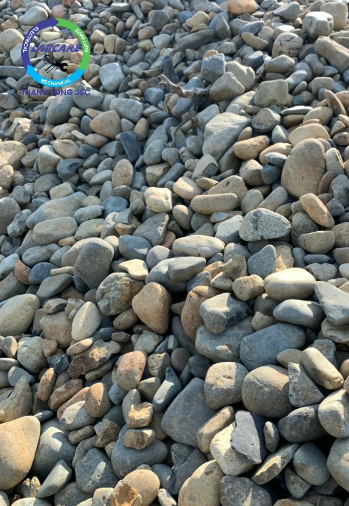
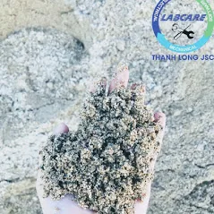
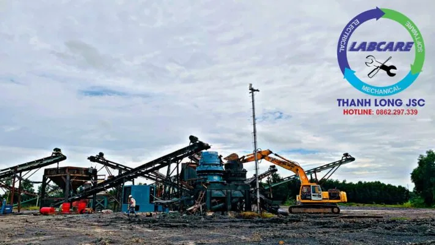

Sỏi có sẵn tại đồi, sông, suối ở thượng nguồn các con sông, được coi là một trong những loại liệu tốt nhất để sản xuất ra cát. Sỏi với thành phần chủ yếu là Oxit Silic ( 99,39%) nằm trong nước hoặc cát đồi, nên bị bào mòn không có sắc cạnh, có hình dáng bề mặt thoi tròn và nhẵn, tính liên kết rất cao cấu trúc không theo vân thớ nhất định và cơ tính là dai và khó nghiền hơn hẳn so với các loại đá granite hay bazan thông thường. Để nghiền được cát nhân tạo từ sỏi yêu cầu nhà đầu tư phải lựa chọn máy nghiền sỏi thành cát phù hợp đảm bảo chất lượng. Hiện nay trên thị trường có Máy nghiền cát Thanh Long được sử dụng rộng rãi, hiệu quả với tất cả vật liệu đá, quặng, sỏi, …

Cầu vượt cung
Cát tự nhiên theo thống kê, hiện nay Việt Nam có 331 mỏ cát với tổng trữ lượng ~ 2.079,72 triệu m³. Nếu dùng để san lấp thì đến năm 2022, sẽ hết cát và cát dùng trong bê tông xây dựng chỉ đáp ứng được thêm 15 – 20 năm. Mỗi năm nhu cầu cát xây dựng cần khoảng 120 triệu m³, lượng cát khai thác được 28,985 triệu m³/năm cũng chỉ đáp ứng được 24,2% nhu cầu.
Đối với cát san lấp, nhu cầu cần từ 525 – 575 triệu m³. Hiện trên cả nước có 71 cơ sở khai thác cát san lấp được cấp phép với tổng công suất đạt 4,58 triệu m³/năm. Mới đáp ứng được 1,5% nhu cầu hàng năm.
Theo ông Lương Đức Long – Viện trưởng Viện Vật liệu xây dựng (Bộ Xây dựng) cho rằng. Chính việc sử dụng cát tự nhiên làm VLXD, chính là một trong những nguyên nhân chính dẫn đến việc thiếu hụt cát. Nếu dùng như hiện nay thì chỉ khoảng 10 năm nữa là hết trữ lượng và giá cát sẽ tăng cao.
Giá cát tự nhiên tăng “đột biến”
Tại TP.HCM giá cát tự nhiên được Công ty TNHH MTV vật liệu xây dựng Hiệp Hà bán ra quý 1-2021 là 150.000 đồng/m3 cát san lấp. 180.000 đồng/m3 cát xây, tô trát. 290.000 đồng/m3 cát trộn bê tông, cát vàng.
Giá cát theo thông báo của Sở Xây dựng TP.HCM vào tháng 12-2020 có nhiều mức giá khác nhau tùy theo địa bàn các quận huyện. Trong đó, giá cát san lấp 118.000 – 300.000 đồng/m3. Cát xây tô 126.000 – 430.000 đồng/m3, cát trộn bê tông từ 163.000 – 458.000 đồng/m3. Trong khi giá cát nhân tạo trên thị trường được ghi nhận 280.000 – 300.000 đồng/m3.
Ông Phạm Văn Bắc – vụ trưởng Vụ Vật liệu xây dựng, Bộ Xây dựng – cho biết:. Hiện có nhiều cơ sở sản xuất máy nghiền sỏi thành cát nhân tạo, nhưng giá cát nhân tạo, cát nghiền phụ thuộc vào điều kiện từng nơi. Cát là vật liệu sản xuất thông thường được phân cấp cho địa phương quản lý, cấp phép khai thác sản xuất. Bộ Xây dựng chỉ quản lý về quy hoạch, ban hành tiêu chuẩn, quy chuẩn sản xuất cát nhân tạo.

Hướng giải quyết nằm ở tư duy máy nghiền sỏi thành cát
Máy nghiền sỏi thành cát nhân tạo, các hoạt động do các địa phương cấp phép. Cát nhân tạo nếu sản xuất đúng tiêu chuẩn, quy chuẩn khi sử dụng tại các trạm trộn bê tông sẽ tốt hơn cát tự nhiên.
Do tính chất đặc biệt
Cát nhân tạo không lẫn tạp chất, hạt cát đồng đều hơn cát tự nhiên. Có thể điều chỉnh module và tỷ lệ thành phần hạt cho các loại bê tông khác nhau. Giúp tiết kiệm xi măng, nhựa đường, tăng tuổi thọ công trình và rút ngắn thời gian thi công (bê tông xi-măng, bê tông Asphalt, bề tông dầm lăn, bê tông nhựa microsell). Rút ngắn thời gian thi công, tăng tuổi thọ công trình. Do tận dụng được nguồn nguyên liệu đầu vào, nên giá thành cát nhân tạo hạ hơn giá cát tự nhiên cùng loại (khai thác hợp pháp) khoảng 18%.

Máy nghiền sỏi thành cát nhân tạo VSI
Máy nghiền sỏi thành cát nhân tạo VSI thường được lắp đặt trong giai đoạn cuối của dây chuyền nghiền đá hoặc sỏi, để tạo ra dải hạt từ 0-40 (tùy theo kích thước lỗ sàng) hoặc tạo ra đá 1×2 với hình thù đẹp, đáp ứng các TCVN về cát nghiền hoặc đá cấp phối. Đó là các tiêu chuẩn như: TCVN 9205 : 2012, TCVN 7570: 2006 và tất cả các TCVN khác.

Bí quyết đầu tư “Tiền đẻ ra tiền” từ máy nghiền sỏi thành cát
Với ưu điểm nổi trội, được quan tâm đến ngay từ giai đoạn sản xuất. Máy nghiền sỏi thành cát nhân tạo VSI được trang bị cánh quạt cân bằng nhanh là thiết bị nghiền cát hiệu quả nhất trên thế giới hiện nay:
- VSI có bôi trơn dầu mỡ đáng tin cậy
- Truyền động đai V, truyền động kép
- Duopactor được làm từ thép xây dựng chắc khỏe, kiên cố, được thiết kế để lắp đặt nhanh chóng và dễ dàng
- Trục thép hợp kim và giá bệ cân kiên bố trong một vỏ bọc hình vỏ đạn rắn chắc.
- Chi phí vốn có tính cạnh tranh đặc biệt khi so sánh với các thiết bị nghiền thông thường.
- Cài đặt dễ dàng nhanh chóng với các kết cấu đỡ tối thiểu.
- Dễ dàng truy cập vào các bộ phận bên thông qua một cửa kiểm tra rộng rãi trong buồng nghiền.
- Các chi phí hoạt động, hao mòn, bảo trì, tiêu thụ điện năng đều ở mức thấp hơn cho mỗi tấn sản phẩm.
- Thân thiện với môi trường – Yên tĩnh khi vận hành.
- Chịu tràn và những thay đổi trong việc phân loại vật liệu đầu vào. Hệ thống nhiều tầng ép có thể hoạt động, như một hệ thống tràn tích hợp sẵn. Ngăn động cơ bị ngắt khi xảy ra tình trạng quá tải. Trong hầu hết các máy có tính cạnh tranh, Không có cơ sở Tầng.
- Khả năng kiểm soát sự phân bố kích thước sản phẩm. Bằng phương tiện kiểm soát tầng, thay đổi tốc độ cánh quạt và kích thước cánh quạt.
- Tạo hình dạng hạt lập phương vượt trội trong đó tăng cường hiệu quả sàng lọc

Bảng so sánh VSI SRH và các dòng máy VSI khác cùng công suất
Tiêu chí đánh giá |
Bảng so sánh VSI và các dòng máy VSI khác cùng công suất | |
| VSI B6150SE (100-280TH) | VSI Khác công suất 100-280TH | |
Nguyên lý hoạt động |
– Hoạt động theo nguyên lý đá va đá Tốc độ rotor được điều khiển tự động có thể thay đổi được( từ 50-85m/s )-> có thể điều chỉnh tỷ lệ cát đầu ra đến 50%-70% tuỳ loại đá. . . | – Hoạt động theo nguyên lý đá va đe kim loại.Tốc độ rotor hầu như không thay đổi được.Tỉ lệ cát ra phụ thuộc nhiều vào kết cấu cơ khí; |
| – Điều chỉnh kiểu cho ăn theo tầng/lớp -> giúp tăng tỷ lệ đá vo phục vụ cho trạm trộn bê tông, đường cao tốc nếu cần thiết | – Chỉ có 1 cách cho ăn trực tiếp thông qua rotor. | |
Kết cấu cơ khí |
– Thân máy được đúc tại xưởng đúc riêng, với sự giám sát chất lượng nghiêm ngặt.Thép được nhập từ châu âu với chất lượng cao | – Thân máy được đúc tại xưởng của bên thứ 3.Đa phần thép xuất xứ từ Trung Quốc với hàm lượng tạp chất cao. |
| – Kết cấu nhỏ gọn. 1870 x 2575 x 2189 mm, 6,371kg. Giúp việc vận chuyển và lắp đặt dễ dàng, tiết kiệm chi phí | – Kết cấu cơ khí to và rườm rà, tốn diện tích. Gia công bệ đỡ 4560 x 2450 x 2780 mm, 14,500kg | |
| – Hệ thống nâng hạ, điều chỉnh cửa cấp liệu bằng thuỷ lực. Giúp tối ưu hoá hiệu suất nghiền và điều chỉnh được tỷ lệ đầu ra sản phẩm. | – Hệ thống nâng hạ bằng tay,hầu như không điều chỉnh được tỷ lệ đầu ra sản phẩm | |
| – Tốc độ rotor từ 1500-2500 vòng/phút tỷ lệ cát cao hơn khi vòng quay rotor lớn. | – Tốc độ rotor 900-1300 vòng/phút. Một số đơn vị có thể lên tới 1500v/phút, tuy nhiên bạc đạn , vòng bi rất hay hỏng. | |
| – Thân máy được đúc tại xưởng đúc riêng, với sự giám sát chất lượng nghiêm ngặt.Thép được nhập từ châu âu với chất lượng cao | – Thân máy được đúc tại xưởng của bên thứ 3.Đa phần thép xuất xứ từ Trung Quốc với hàm lượng tạp chất cao. | |
Hệ thống giám sát cảnh báo an toàn cho thiết bị |
– Hệ thống giám sát và cảnh báo an toàn: độ rung, nhiệt độ vòng bi, trục rotor,nhiệt độ động cơ giúp tăng tuổi thọ máy. | – Không có |
| – Hệ thống điều khiển hoàn toàn tự động IC giúp tối ưu hiệu suất đầu ra,đồng thời tối thiểu điện năng tiêu thụ=> Không phụ thuộc vào trình độ và kinh nghiệm của người vận hành | – Không có, công suất đầu ra và điện năng tiêu thụphụ thuộc rất nhiều vào người vận hành chỉnh máy | |
Vật tư tiêu hao dao nghiền cát |
– Nguyên lý đá va đá, đá va vào đệm cát trong các hộc trên thân. Giúp tiết kiệm được vật tư tiêu hao.( tuổi thọ trung bình của dao cát 35,000-40,000m3/ bộ dao ) | – Tiêu tốn vật tư dao và đe – 15,000-20,000m3/ bộ khi dùng cho đá granite. |
Điện năng tiêu thụ |
– Sử dụng động cơ 110kW-150KW=> tiết kiệm điện năng tiêu thụ hàng năm Với sự cố nhỏ,hệ thống thủy lực tự nâng hạ và cảnh báo, sửa chữa rất chóng | – Sử dụng 2 động cơ 132kW = 264kW hoặc 320kW |
Vật tư thay thế |
– Khi cần đến vật tư tiêu hao thì có Kho hàng ở Bà Rịa Vũng Tàu, Đồng Nai, Bình Phước, thời gian 1 ngày. | – Phải đặt hàng từ Trung Quốc,hay đúc trong nước hoặc chế tạo phi tiêu chuẩn, sai số rất lớn,mau hư |
Dụng cụ và thiết bị bảo trì |
– Bộ dụng cụ tiêu chuẩn + thiết bị cân bằng động của rotor. Giúp người vận hành kiểm tra và cân bằng động cho rotor, giúp tăng tuổi thọ vòng bi. | – Bộ dụng cụ tiêu chuẩn. hoặc không có kèm theo |
Sách hướng dẫn vận hành |
– Sách hướng dẫn vận hành, sổ tay vật tư tiêu hao. Bản vẽ đấu nối và bảo trì máy rất chi tiết, cụ thể | – Không có/ có nhưng rất sơ sài hoặc bằng tiếng Tàu không sử dụng được |
Kỹ sư hỗ trợ lắp đặt,sự cố bảo hành |
– Đội kỹ sư và chuyên gia, sẵn sàng hỗ trợ khách hàng 24/24, lắp đặt, vận hành,bảo trì, khắc phục sự cố | – Không có, nếu có cũng không nắm được kỹ thuật. Chờ kỹ sư từ nước ngoài bay sang hỗ trợ khi xảy ra sự cố |
Xuất xứ hàng hóa |
–Phần Lan – Châu Âu – 125 năm kinh nghiệm về máy nghiền cát | – Hàng Trung Quốc/ Nhật nghĩa địa,copy công nghệ |
- Tiết kiệm điện từ 4000đ/ 1 khối đá cát đầu ra.
- Vật tư tiêu hao bền hơn 2 lần so với các nhà sản xuất khác.
- Hoạt động bền bỉ không dừng máy, chi phí sản xuất thấp
- Hệ thống báo hiệu cảnh báo áp suất, nhiệt độ, khe xả trên màn hiển thị.
- Hệ thống chống kẹt đá, phát hiện kim loại, chống quá tải được tích hợp.
Thanh Long JSC đại diện chuyên cung cấp:
- Dây chuyền nghiền cát/đá cố định: Máy kẹp hàm, máy nghiền côn, sàng rung phân loại, máy nghiền cát nhân tạo VSI Barmac, …
- Dây chuyền nghiền cát/đá di động: máy kẹp hàm di động, máy nghiền côn di động, sàng rung phân loại di động, máy nghiền cát nhân tạo VSI Barmac di động,..
- Công nghệ rửa/tách:: Máy rửa cát theo module, sàng rung tách nước, máy tuyển rửa cát, máy tách cát mịn, máy thu hồi cát mịn…
- Vật tư, thiết bị phụ tùng: Dao nghiền, lưới sàng, má kẹp hàm, nón côn, …
Các dự án lớn đã lắp đặt dây chuyền tại Việt Nam:
GIAO HÀNG MÁY NGHIỀN CÁT NHÂN TẠO
Cận cảnh máy nghiền đá hoạt động tại mỏ đá Việt Nam
Lắp đặt trạm nghiền đá và cát xây dựng được nhập khẩu hoàn toàn từ Phần Lan.
Khủng khiếp máy nghiền đá xây dựng lớn nhất Việt Nam
Kênh video Youtube:
- Thế giới máy nghiền đá : https://bom.to/Htr0s8Qj9ThdOi
- Thanh Long JSC: https://bom.to/6kyWNaQG07y6Oy
Page Facebook: Công Nghệ Máy Nghiền Đá
Website: https://thegioimaynghienda.com https://labcare.com.vn/
Zalo, hotline: 0912 712 772